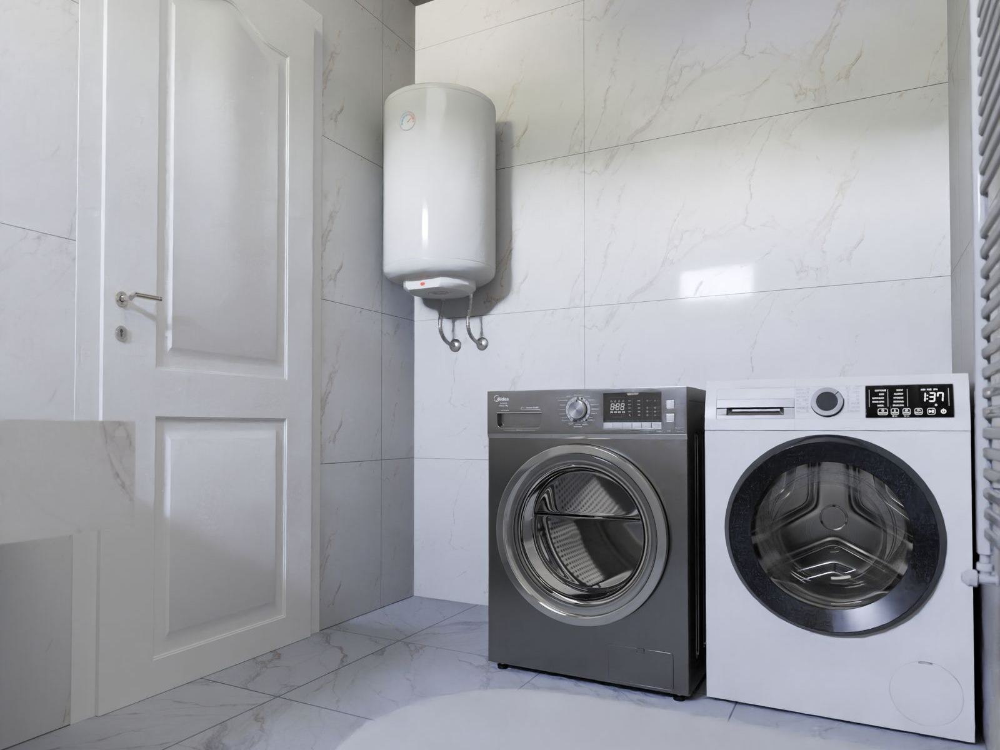

Many of the installation calls we get in Hattiesburg, MS are not replacements at all. A household outgrows its tank and needs more capacity. A homeowner wants the heater out of a hall closet and into the garage or basement. A remodel calls for a second unit at the far end of the house, or an all-electric conversion means trading gas for a heat pump model. Every one of them involves new work: gas lines that must be sized for the load, vents that must be routed and pitched correctly, circuits that must match the heater, and water lines that must be run cleanly. Hattiesburg Water Heater works all of that out before the installation starts.
Sizing and placement shape most of the outcome. For a tank, the first-hour rating is the number we compare against your household's busiest hour; for a tankless unit, we size by flow rate and winter temperature rise. Location comes next. A gas heater needs a vent route and combustion air, a heat pump heater needs open space and a condensate drain, and a whole-house electric tankless unit usually needs a big dedicated circuit and matching panel capacity. Any heater placed above a finished ceiling needs a drain pan, and a gas unit in a garage may need to sit on a raised platform where code requires it. We explain the trade-offs plainly and without pressure.
On installation day, nothing is left to guesswork. New gas piping is run and pressure-tested, a sediment trap goes on, and the vent is routed exactly to spec. For electric and heat pump units, the circuit is matched to the load. Water lines go in with accessible shutoffs and proper transitions between dissimilar metals, and the relief valve is piped full size to a safe discharge point. Where code requires an expansion tank, drain pan, or seismic straps, we add them, and we pull the permit when your jurisdiction needs one. Then we fill the heater, confirm draft and combustion on gas models, and set a safe temperature. Planning a new installation? Call (601) 230-0332 for an assessment in Hattiesburg.
Replacing a heater that failed? See Water Heater Replacement in Hattiesburg.

How Much Does Water Heater Installation Cost in Hattiesburg?
For most Hattiesburg homes, a new water heater installation usually lands somewhere between $1,100 and $5,500. The type of heater sets the base price, and the site work around it moves the total up or down. You get a written price after a site check, before anything is ordered.
| Installation | Typical cost | What it usually means |
|---|---|---|
| Standard tank, same locationGas or electric tank hooked up where the old one stood | $1,100–$2,800 | Existing water, gas or power, and venting reused |
| Tankless water heaterSized by flow rate; gas line and venting drive the price | $2,800–$5,500 | Sized by flow rate; gas line and venting drive the price |
| Heat pump (hybrid) water heaterBefore any rebates; the space matters as much as the unit | $2,800–$5,000 | Before any rebates; the space matters as much as the unit |
| Relocating the water heaterMoving it out of a closet, attic, or living area | $500–$1,500 added | New water, gas, or power runs to the new spot |
| New gas line or ventingNeeded when the fuel demand or vent type changes | $300–$1,200 | Needed when the fuel demand or vent type changes |
| Dedicated 240V circuitDepends on panel space and the length of the wire run | $300–$1,000 | Electric tanks, electric tankless, and heat pump units |
| Expansion tank, drain pan, strapsProtects against pressure spikes, leaks, and movement | $150–$500 | Code items many areas require on new installs |
These are common installed price ranges, not quotes. We confirm the exact price after a site check.
Factors That Change the Price
- The type and size of heater you choose
- Whether the gas line, venting, or electrical service can handle the new unit
- Relocation, which adds new water, fuel, and drain lines
- Local permit fees and required safety items like expansion tanks and pans
Planning ahead lets you pick the right unit instead of whatever is on the truck the day the old one fails. These are typical ranges, not quotes. Call (601) 230-0332 for your price.
Warning Signs to Watch For
Most tanks announce trouble weeks or months ahead with rumbling noises, rusty water, or hot showers that keep getting shorter. If any of the following sound familiar, it's worth having the unit checked:
- New construction or a major renovation that needs a heater from scratch
- Taps at the far end of the house that take minutes to warm up
- A heater squeezed into a closet or attic where a leak would do real damage
- Hot water running out before everyone has showered
- Remodel plans that add fixtures or a second bathroom
- Interest in tankless or heat pump efficiency
- Venting, relief valve piping, or gas connections that do not look right
- Big-tub or multi-shower demand the current heater cannot meet
Don't Wait for a Total Failure
A little rust-colored water or a relief valve that drips now and then can be the first hint of a tank that is close to the end. Call Hattiesburg Water Heater at (601) 230-0332 at the first sign of trouble.
Get Water Heater Installation Handled Today
We'll diagnose the problem and give you a straight answer on the fix.
Tap to Call (601) 230-0332What Homeowners Ask Us Most
What a Trained Technician Brings to the Job
Start with the gas line. A new heater on an undersized line starves for fuel whenever the furnace or range is running, and a whole-house tankless unit often needs a larger line than the house already has. The vent has to be the right material, size, and pitch, with proper clearances, so exhaust leaves the home instead of drifting back into it. Electric models bring their own math, since breaker, wire gauge, and panel capacity all have to match. Add relief valve piping, dielectric fittings, expansion tanks, drain pans, seismic straps, and permit rules that vary from one jurisdiction to the next, and there are a lot of details to get right.
Professional service handles every trade involved, not just setting the heater. Sizing by first-hour rating or flow rate, tested gas piping, a vent routed to spec, a circuit matched to the load, and the expansion tank, pan, or straps your code requires are all included. Gas units get a draft and carbon monoxide check before we leave. You end up with an installation that is safe, properly sized, and ready for inspection. If a smaller or simpler heater fits your needs better, we will tell you directly.
What to Expect From Our Team
Good water heater work comes down to a consistent routine, and ours starts with a real diagnosis instead of a guess. Here's exactly how a typical visit unfolds:
Site Assessment
We size the heater to your household, pick the best location with you, and check gas supply, vent routes, electrical capacity, and code requirements.
Written Scope & Quote
Nothing happens without your approval. We explain the choices, the work each one requires, and one firm price with nothing left vague.
Built to Code
We run the gas, water, vent, and electrical connections, set the heater, and add expansion tanks, drain pans, or straps where code calls for them.
Verified Startup
The heater is filled, purged, and fired for the first time while we test every joint for leaks, confirm draft and carbon monoxide on gas units, and set the temperature.
Simple Ways to Extend Your Water Heater's Life
Most of the failures we see could have been delayed for years with basic upkeep. Follow these tips from our technicians:
- Keep the temperature around 120 degrees; hotter settings raise the risk of scalding
- Nothing flammable belongs near a gas burner or its air supply
- Leave working space around the heater, and never stack storage against it
- A periodic checkup with an anode inspection keeps a new tank healthy for years
- Plan an annual descaling if you installed a tankless unit
- Start a flushing routine early, before sediment has a chance to harden
- Moisture in the drain pan or at the relief line is an early warning worth a call
Comparing DIY and Professional Work
Relighting a pilot by following the label is one thing. Diagnosing a gas valve, a burned-out element, a dirty flame sensor, or a tankless error code calls for meters and know-how that a pro brings. Here's how the two approaches stack up:
| Factor | Doing It Yourself | Professional Service |
|---|---|---|
| Capacity | Picked by tank gallons alone | Sized to your busiest hour |
| Gas Piping | No check of the total gas load | Line sized and pressure-tested |
| Venting | Mixed or incorrect vent materials | Correct size, slope, and clearances |
| Electrical | Circuit reused without checking | Circuit matched to the heater's load |
| Code Items | Code items left for later | Built to local code |
| Result | Works until the inspector looks | Safe, sized, and verified |
Talk to Our Water Heater Installation Team
Get your hot water back before a small fault turns into a flooded floor. Hattiesburg Water Heater is ready to respond fast.
Tap to Call (601) 230-0332Where We Provide Water Heater Installation
Our service area reaches well past the city limits. Choose your community for local details.